十字架庇祐
有舒服的床可以睡，習慣性的就會賴床，安穩的睡到八點多才起床，這樣一來至少就流失了兩個小時的日光時間。
睡飽才有精神跟逆風奮鬥，賴床也是情有可原，昨天費盡九牛二虎之力才騎到知本，今天不曉得能騎多遠？
行李比起出遠門旅行要簡便很多，大概只有五分之一的份量，所以出發前的準備也很短。
從睜開眼睛打哈欠，到跨上車準備出發，大概只需要五分鐘的時間。
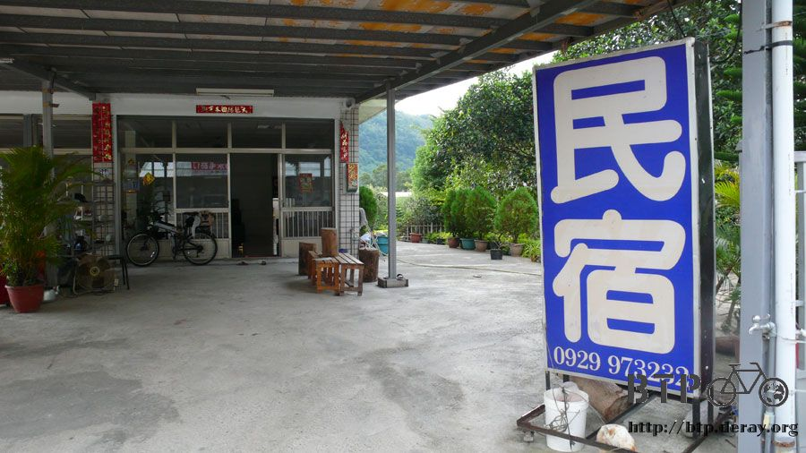
這個招牌在四年前的毛毛雨夜晚指引著我找到過夜處，過了四年，有些東西變了，有些則依然和記憶中一樣。
出發之前老闆娘拿了幾個蒸包子和饅頭讓我帶著路上吃，全都是白色系的食物，裡面還隱藏著一粒水煮蛋。

騎到知本之後，往北的路線分叉為兩個，分別是花東縱谷的台九線，這條上次環島騎過了。
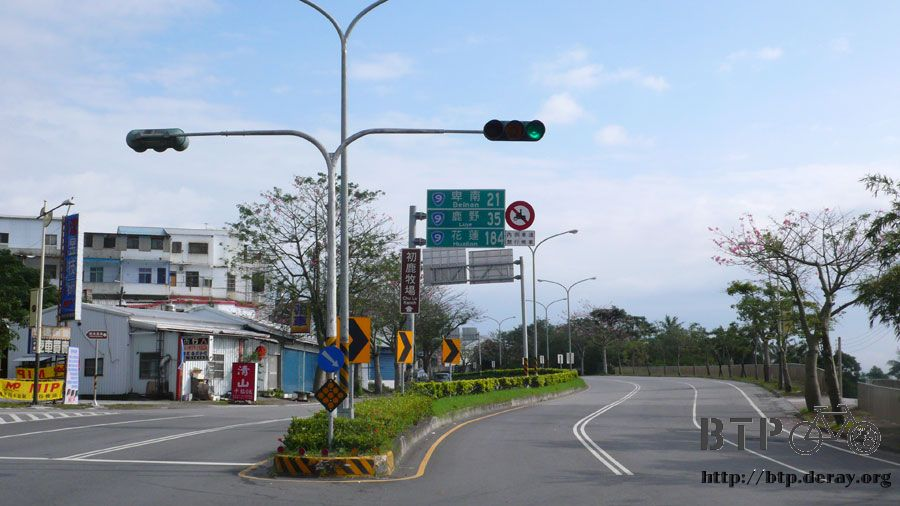
另外一條則是東部沿海公路，台十一線，這個就比較新鮮，沒走過。
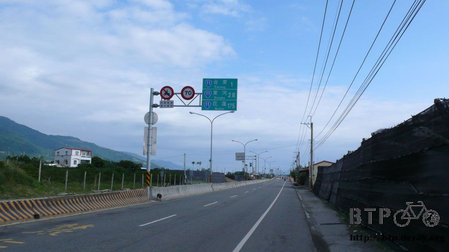
問題是，昨天被東北季風吹的慘兮兮，今天還要再騎海岸線那麼辛苦嗎？
照理說，花東縱谷有山脈可以檔著強風，理論上比較好騎，但是要爬一些山路。
而且騎台九線才會經過幾個比較有名的地方，比如說池上、瑞穗等等，錯過池上便當好像有點可惜，雖然說全台灣都有在賣=..=
想了一下，最後還是決定騎台十一線，走不一樣的路看點別的風景，逆風就給它吹吧～慢慢騎還是可以移動的。
距離花蓮一百八十公里，逆風騎車的平均時速只有十公里，要不間斷的騎上十八個小時才會到花蓮，也就是說今天是騎不到的。
別說天黑之前騎不到，就算騎到天亮也不見得可以到，所以就騎多遠算多遠吧。
台東海岸線也種了很多的稻米，吹著鹹鹹的海風，不知道味道會不會比較獨特？
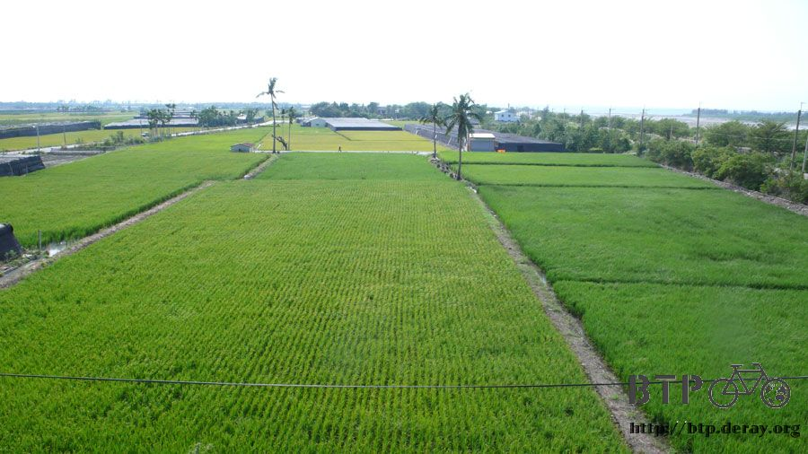
台東縣農會，這個可不是辦公大樓或是農產品銷售中心，而是滿裝稻米的穀倉。
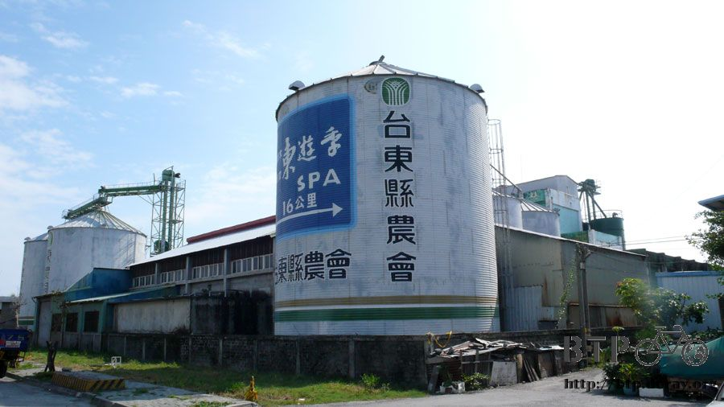
這是一個長方形的人工湖，好幾年前到這裡玩，當地的導遊就說『台東很多景點都很漂亮，但是都沒有人。』
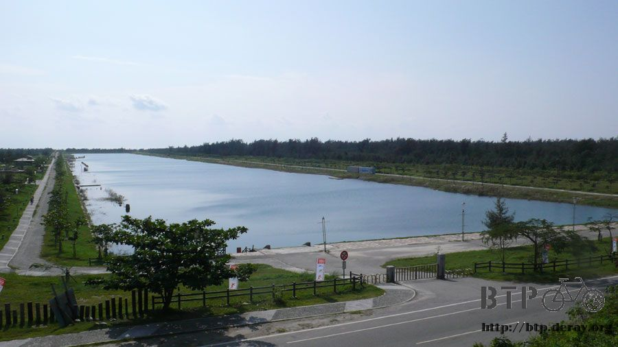
過了那麼多年，同樣的地方，一樣是沒有人，大家到了台東有很大一部分都是要去綠島玩，台東只是跳板而已，實在有點可惜呢。
椰子樹可以說是台東的路樹，到處都可以看見椰子樹，而且結實累累的也很多，要是摘的到就不用花錢去店裡買椰子汁。
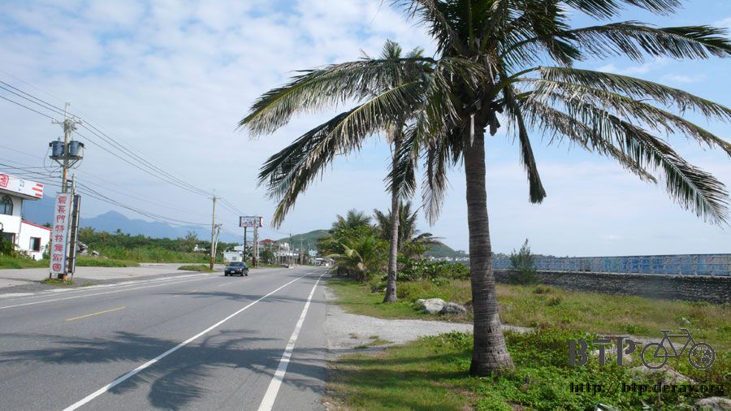
騎車的時候要小心，萬一被椰子砸到頭，那就直接上天堂了～
很漂亮的沿海散步道路，騎自行車的好處之一就是，只要人可以走的地方，自行車大多可以通行。
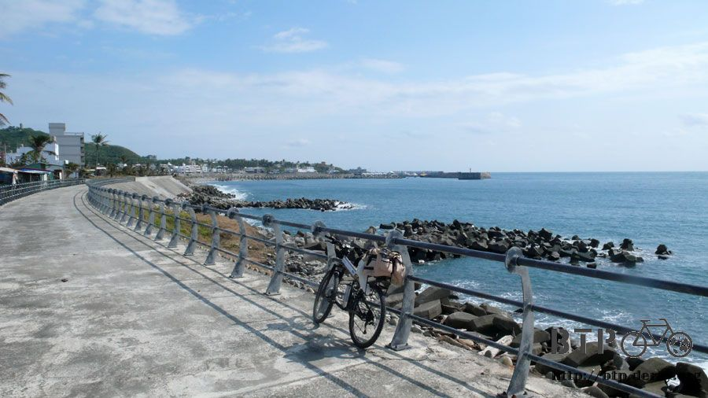
藍天白雲的好天氣，早上騎車很神輕氣爽，過了中午就又下起了毛毛雨，沿海的天氣變化真是很快。
換個角度來一張，行李架上那個白色塑膠袋，本來裝的是拖鞋，現在裝的是變成枕頭的球鞋，拖鞋已經變成騎車的好物了。
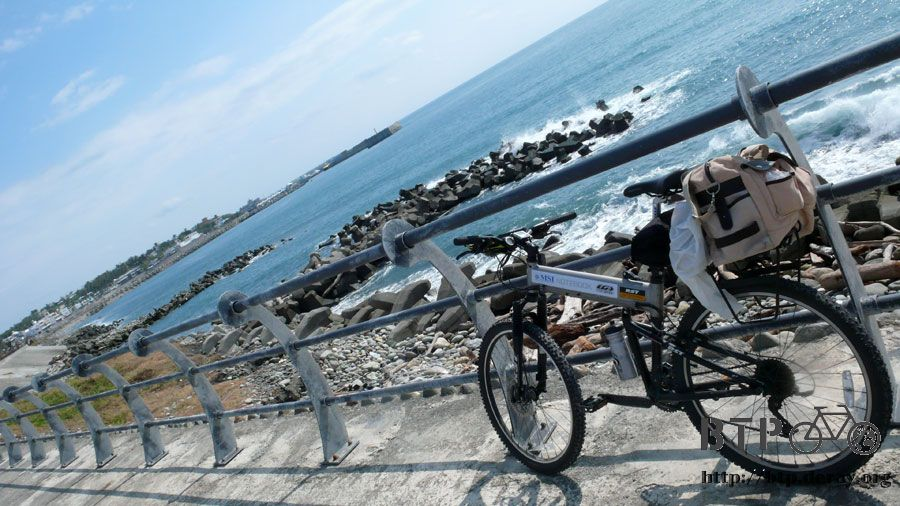
經過這一次的輕裝環島，下次如果再騎一次，行李應該可以再減少個一半左右。
其實也可以什麼都不用帶，只要帶錢跟提款卡就可以環島不用愁。
整片的椰子林，不論是靠海的岸邊或是靠山的坡地，通通都種滿了椰子樹，路邊有房子的地方就會有賣椰子汁的攤販。
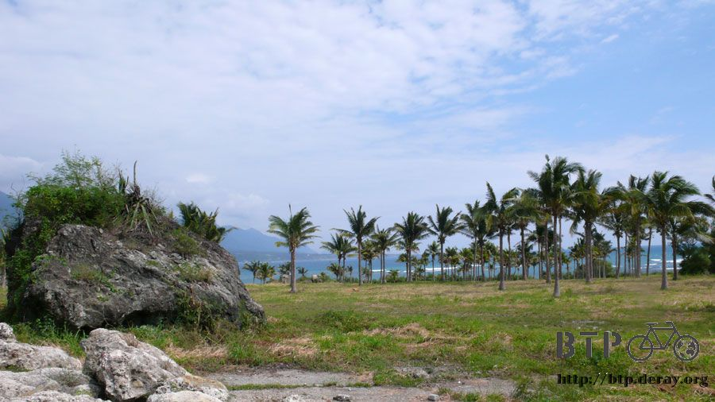
漂亮的東部海岸線，雖然有些微的爬坡路段，但不影響騎乘的節奏，因為本來就騎的很慢，爬坡只是再更慢一點點罷了。
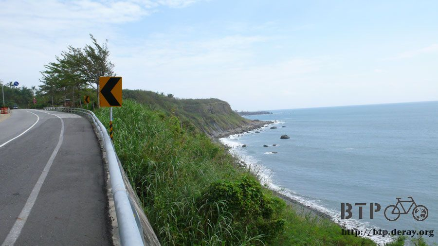
台東的著名水果就是這個了，釋迦，到處都看到店家在賣，統一公定價是一籃一百元，但是...但是...釋迦不是我的菜呀~_~
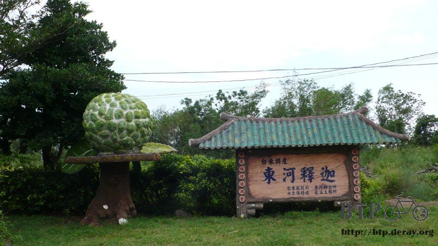
如果有無子釋迦這種東西，我應該會吃的很開心，不然吃釋迦感覺都在吐子，不能大口大口的往肚裡吞。
(謎之音：吃甘蔗不也是不停的吐甘蔗渣。)
看個隨風搖擺的椰子樹，就可以知道逆風的強度有多大，又長又硬的椰子葉也不敵強風而被吹彎，騎著自行車只能低著頭默默的踩踏板。
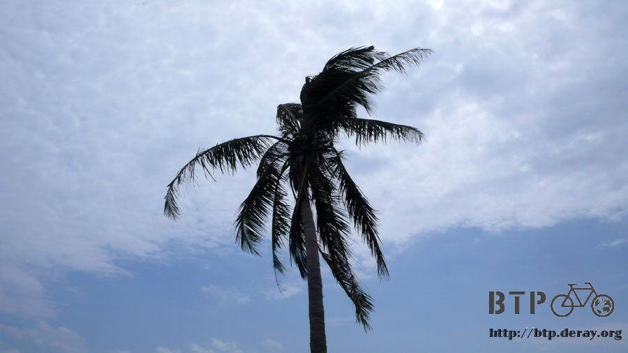
海岸線到這邊會暫時結束，要繞到山裡騎個一段路，山勢很高，在山的另一邊就是台九線。
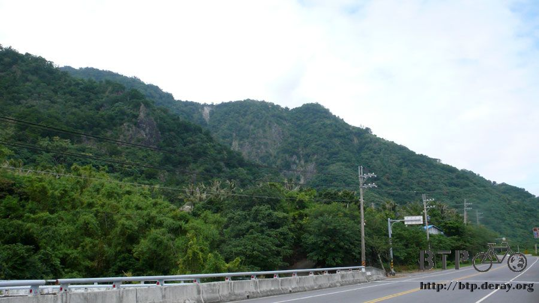
這大概是用漂流木所搭建的奇怪藝術品，如果晚上經過這邊，我會考慮在裡頭住一晚上。

開始爬山了，要繞過眼前的這座山才會重新回到海岸線，我也不懂為什麼這段路要爬山而不是沿著海岸走，明明海岸邊看起來就很寬。
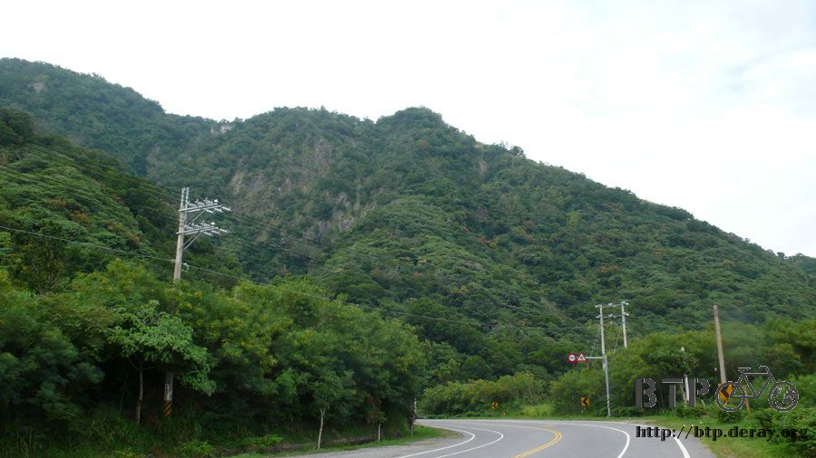
少了便當跟鮮奶的加持，台十一線總有自己的特色名產吧？
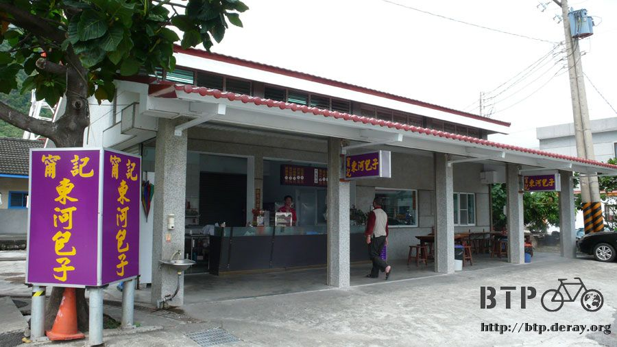
有的，東河的包子，騎到東河的時候眼睛就搜尋著包子店的蹤影，果然輕易的給我發現。
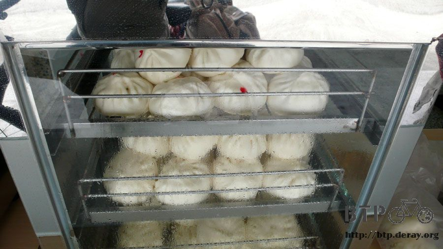
二話不說馬上買兩粒肉包，價錢很便宜，遠低於市價，一粒才12元而已。
等買了包子開心的要吃的時候，才發現隔壁也有一間東河包子，整個讓我很震撼，因為這一間比較像是有名的那一間！
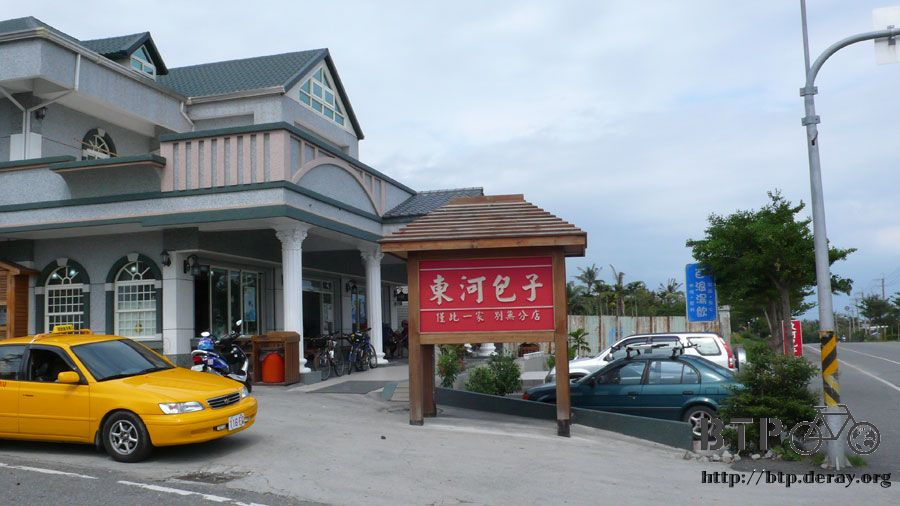
看著手上的包子和這間包子店，心裡滿滿的無言，怎麼有名的東西被模仿的這麼快呢？
雖然吃到的不是正牌有名的東河肉包，但味道真是超讚，皮薄餡多，咬一口湯汁就流了出來，偽包子也挺不錯吃的。
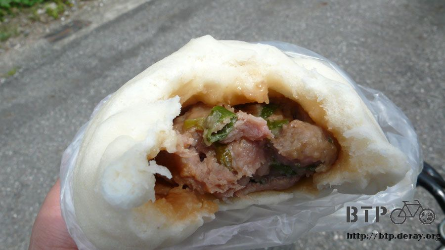
吃著包子過東河橋，如果花蓮、宜蘭段多的是山洞，那台東海岸線多的就是橋樑，各式大大小小的橋數也數不清。
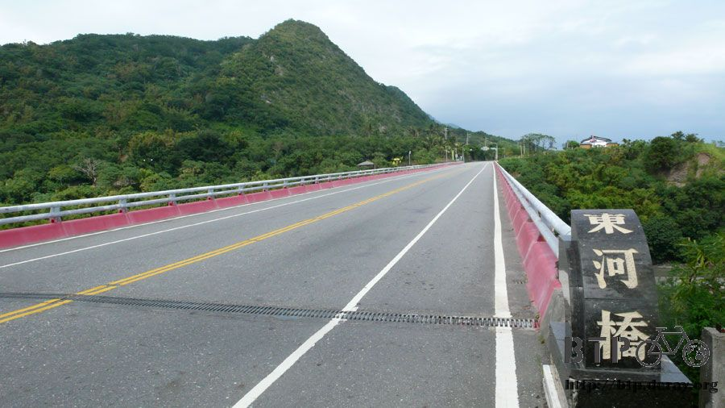
一開始橋還有取名字，也許取的很奇怪，像是小馬橋，到最後則只剩下編號。
而從橋上往左看就是山澗中流出的溪水。
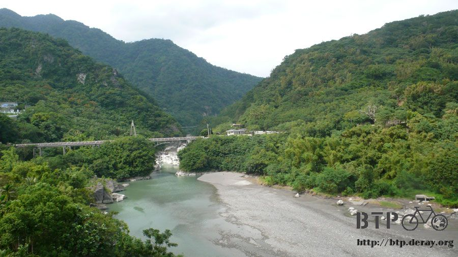
往右看就是出海口，底下還有蜿蜒的散步小路，但不知道怎麼樣才有辦法下去。
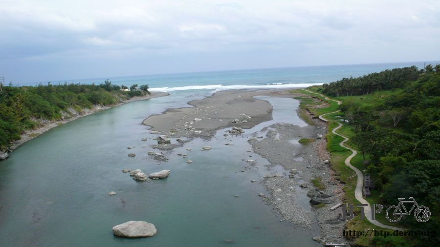
這時候太陽就看不見了，接下來一直到天黑都沒有出現過。
猛一看，還以為是淡黃色的花海，隨著強風不停的擺動，高大的椰子樹也是被吹的像要連根拔起一樣。
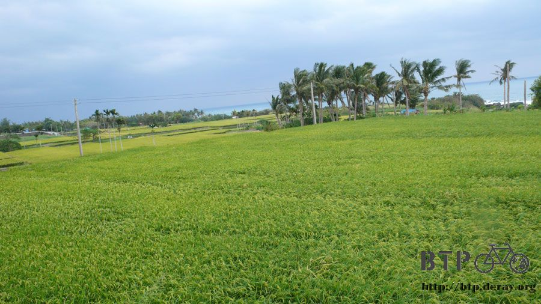
停下車仔細一看，才發現這不是花海，而是稻田，不知道是我眼睛太瞎，還是風太大，連稻米都看不清楚了。
下午一點多以龜速騎到這個地方，超級長的英文名字，這裡到底是哪邊呢？
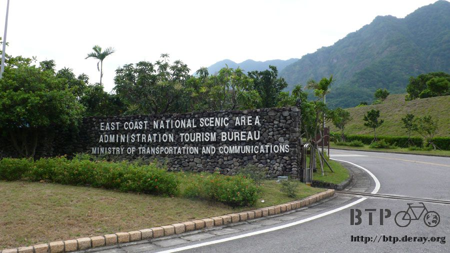
翻成中文只有短短幾個字，英文居然可以寫的那麼長，看了頭就很痛。
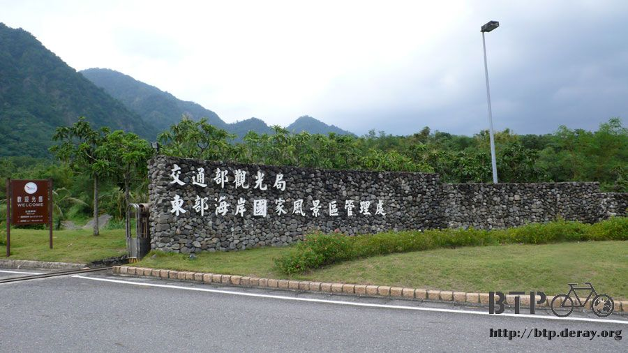
之所以要騎進這邊，是因為裡面有遊客中心，在國外旅行的時候，這邊很能幫的上忙，台灣的不知道服務怎麼樣？
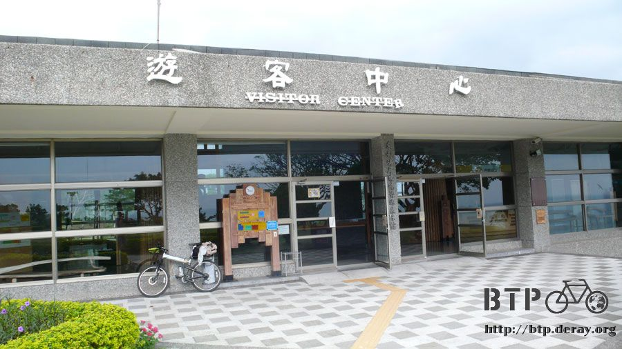
一進到裡頭，左看看，沒人～冷氣吹的好冷，超級空蕩的遊客中心，連服務員也沒有。
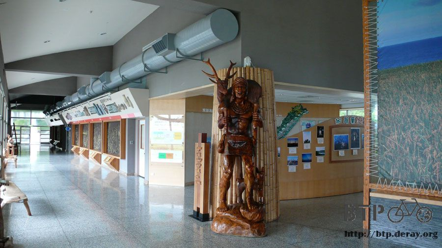
往右一看，也是空蕩蕩，幾個很有特色的木雕，窗明几淨的內裝，看起來很高級，但是，人呢？
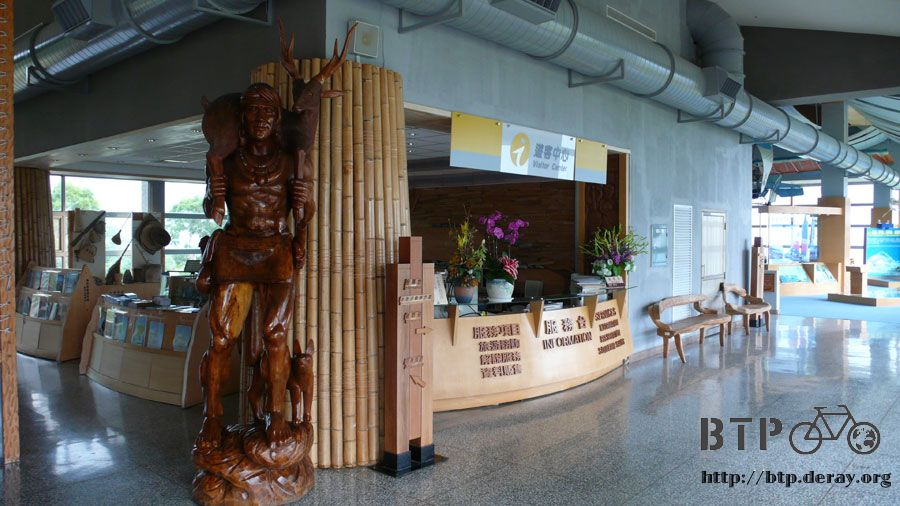
既然沒人那我就自己逛，本來是想問問看有沒有免費的網路可以用，結果發現了很多有趣的東西。
哇～室內有很多擺飾，像是跳傘、潛水，還有一整圈的電腦，可惜都只能查台東的旅遊資訊，不能上網。
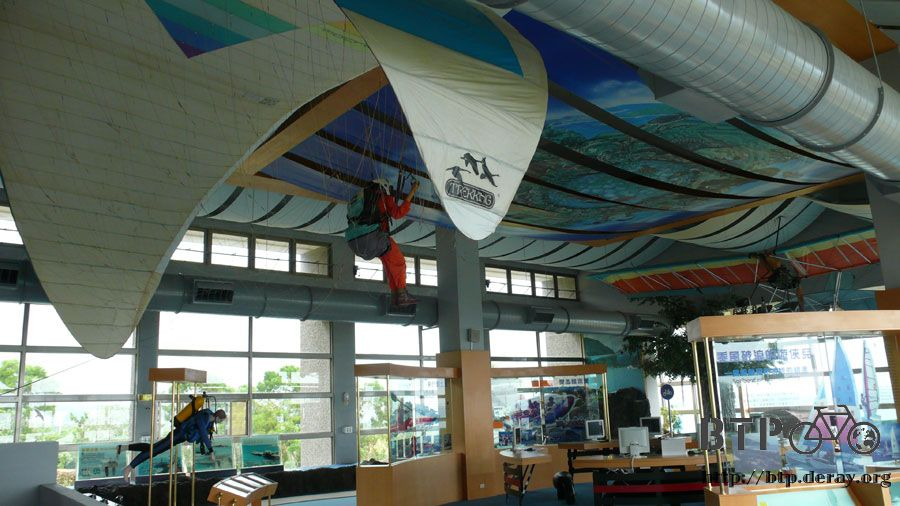
也有單車道，台灣東部的確蠻適合騎自行車旅行，記住要抓對風向騎就是了，逆著風騎的話只有苦不堪言可以形容。
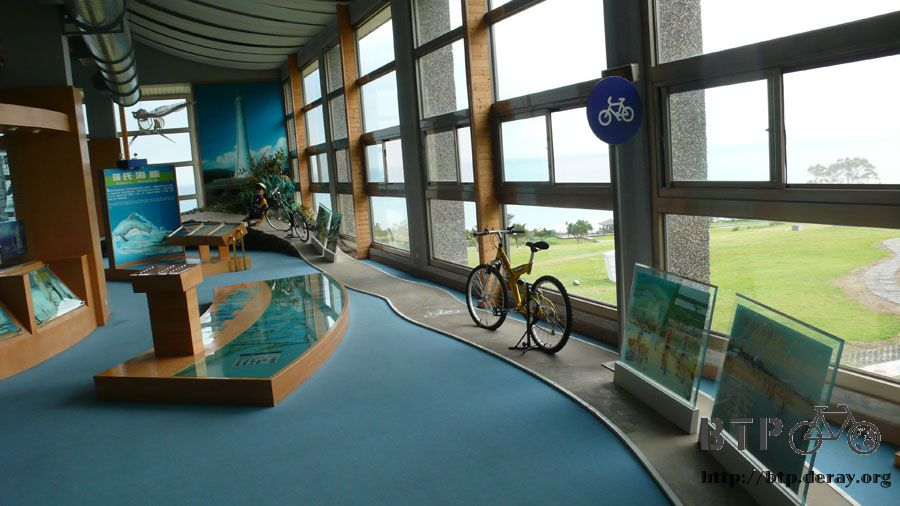
原尺寸的滑翔機，整台搬到室內展示，這個遊客中心真是大手筆，底下還有咖啡廳，也有展覽館，就是沒有服務人員。
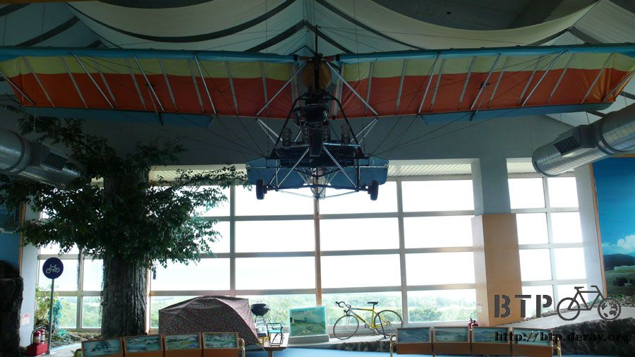
拿出電腦真的發現免費的無線網路，這樣就省下到網咖報到的費用，吹著冷氣小歇片刻。
這時候是下午兩點左右，大概只騎了六十公里，比預計的還要慢很多，看著台東跟花蓮的衛星空拍圖，皺眉頭深思。
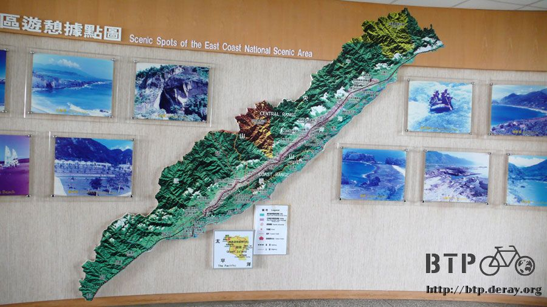
這一條長長的海岸線，不知道要騎幾天才能騎回台北？
前面還有最後的挑戰－蘇花公路，那邊就要耗去一天的時間，可不能在海邊拖太多時間。
但是天公不作美，想騎快點也沒辦法，只好縮短休息的時間，明天別賴床，天亮就出發，天黑才休息，這樣就能多騎一點路。
台東遊客中心是在山坡上，要上來這邊得爬一段陡峭的坡段。
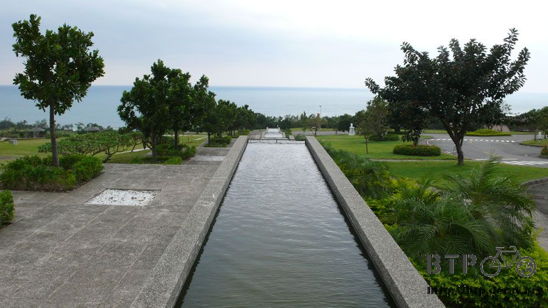
造景的階梯流水，一階一階的往下降，裡面還養了一堆的魚，到最後會不會魚通通掉到最後一階去？
天氣又開始變差，雲層從前方被大風給吹來，盤據在山頭，猜想現在台九線應該在下雨了吧？
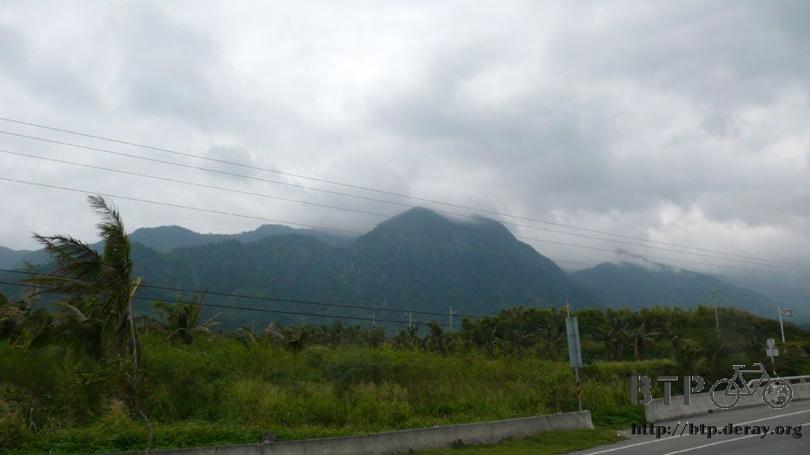
吃完包子沒多久馬上又餓了，經過城鎮的時候就搜尋著好吃的招牌，結果看到這個有趣的牌子，賣的是牛肉麵。
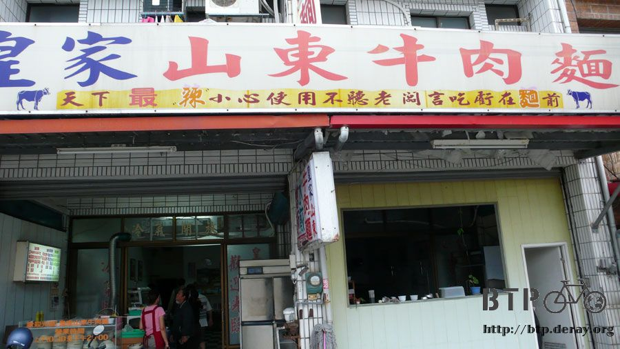
這裡是台灣最東邊的三仙台，也有賣三仙牛肉麵，老闆說，同樣的一碗麵，台北要賣兩百五十元，這裡只要半價而已。
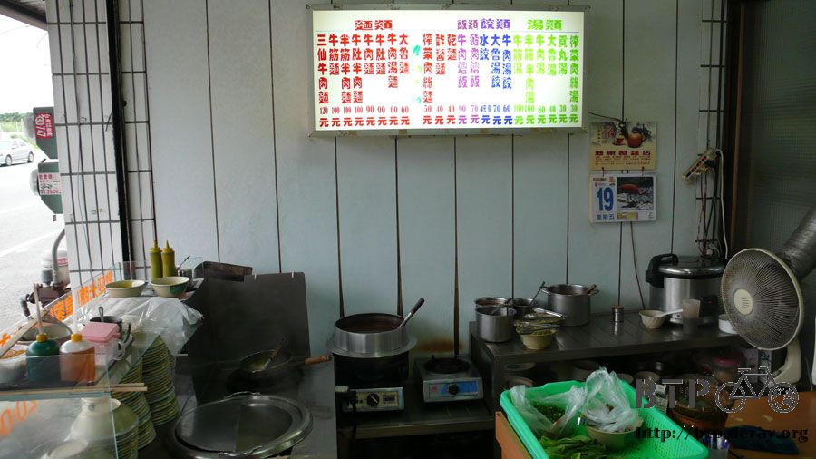
所謂三仙牛肉麵，可不是海鮮，而是牛筋、牛肉、牛肚通通都有的美味牛肉麵。
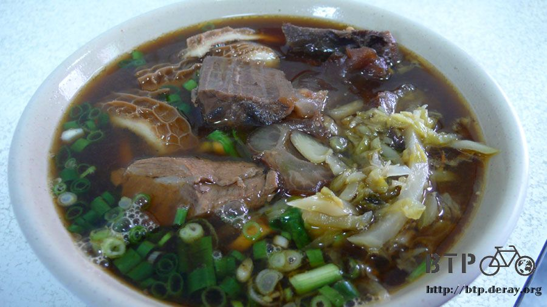
的確是好吃到令人讚嘆，佩服老闆的廚藝之餘還可以聽點八卦，原來現在的麵店都沒有供應燙青菜了，
菜價漲個不停，老闆都不知道該怎麼賣給客人，話說還有吃過燙青菜是燙豆芽菜的，以後大概會有燙紅蘿蔔或是燙冬瓜出現。
吃了一大碗的牛肉麵，又有體力繼續騎車，經過一間用大貝殼當招牌的自然史教育館。
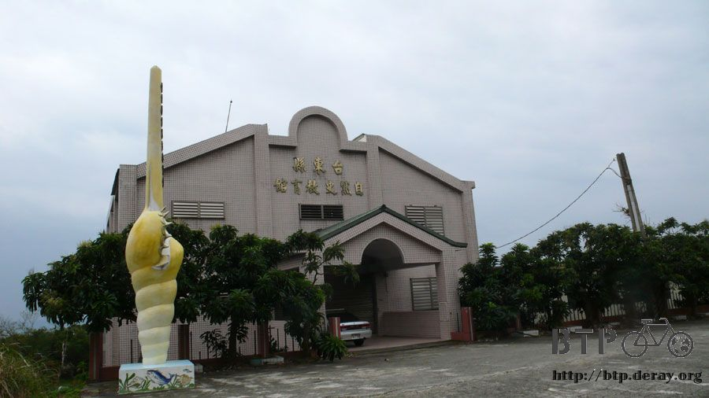
遠眺前方的路，有種沒完沒了的感覺，然後沒多久就下雨了，該來的還是來了。
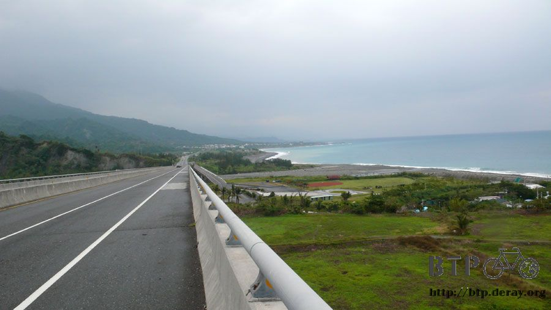
騎過路邊遇到警察在抓超速，拿著手持式的測速器對著路過的車子，一發現超速馬上揮舞著大紅旗攔下車子。
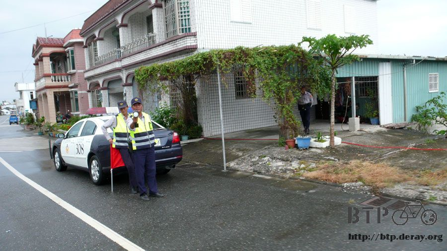
我經過的時候，警察也對著我測速，然後一臉正經的跟我說：『十六公里』
當場讓我笑破肚皮，我真是超愛台東的警察。
不知道是被樹木給壓垮，還是因為卡在樹上，所以免於崩塌的老房子。
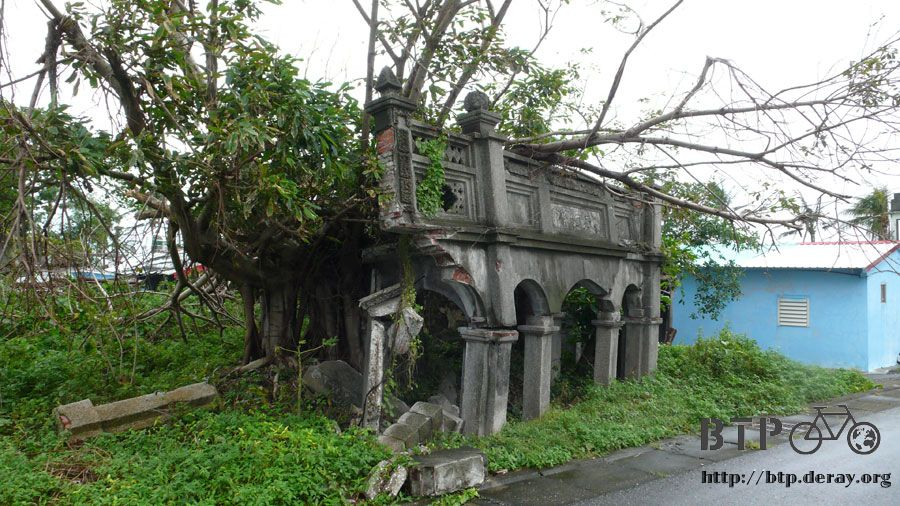
我又要發問了，在海岸邊有一大堆這樣一格一格的水泥，裡面浪了許多的小瓦片，外頭有收起來的黑色網狀物，這個是做什麼用的呢？
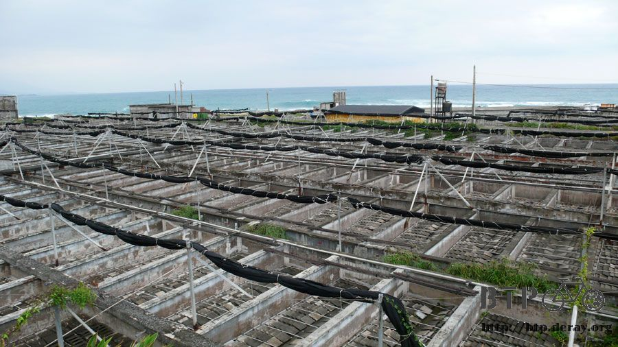
答案是九孔跟鮑魚的養殖槽，而黑色的網子則是遮光罩，讓他們遮光防曬用的。
雨時下時停，因為雨勢不大，所以沒人當一回事，大家都若無其事的作自己的事情，騎車的也繼續騎車。
今天依舊遇到很多騎自行車旅行的人，普遍來說大家都騎公路車，就是那種輪胎細細的車子，摩擦力比較少，騎起來比較輕鬆。
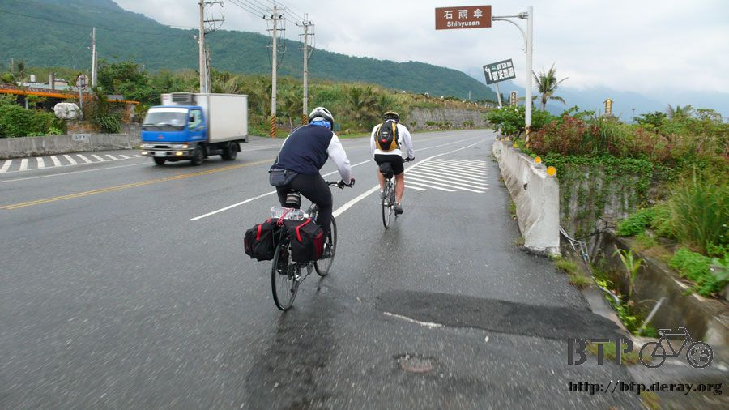
只有我自己很心酸，上演著『被逆風狂吹，只好龜速慢慢爬』的戲碼，其他人輕鬆的就往前騎，每個人都是勇者呀。
騎到下午五點，距離花蓮居然還有一百公里，雖然知道會騎很慢，但整個也太慢了吧，看來明天才有辦法騎到花蓮。
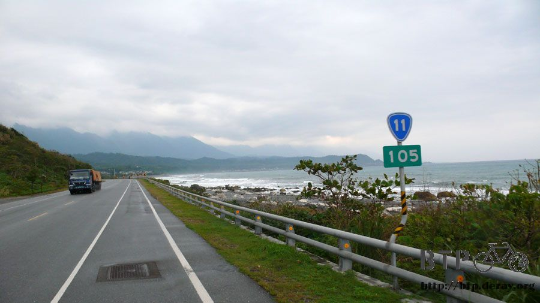
本來規劃一天就能騎到，硬生生的是拆成兩天的份量，可是騎車一點也沒有比較輕鬆，該說無奈嗎？
看著前方的海岸線，怎麼也看不到路在哪裡？可是確實是有路沿著海岸建設，要等騎到了才知道葫蘆裡賣什麼藥。
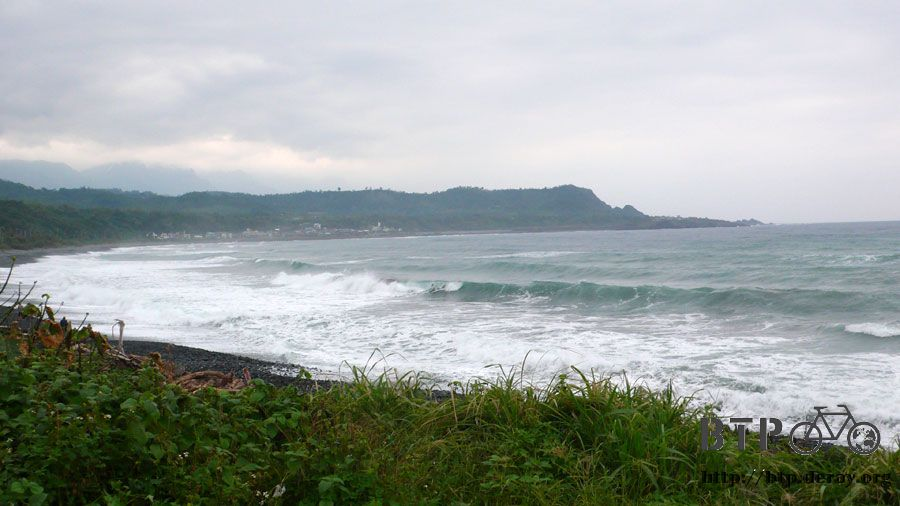
台東的人很友善，到商店買東西，老闆都會閒聊上兩句，路旁的小朋友也會很大聲的喊加油，也有小孩特地騎腳踏車跟著跑，好可愛的說。
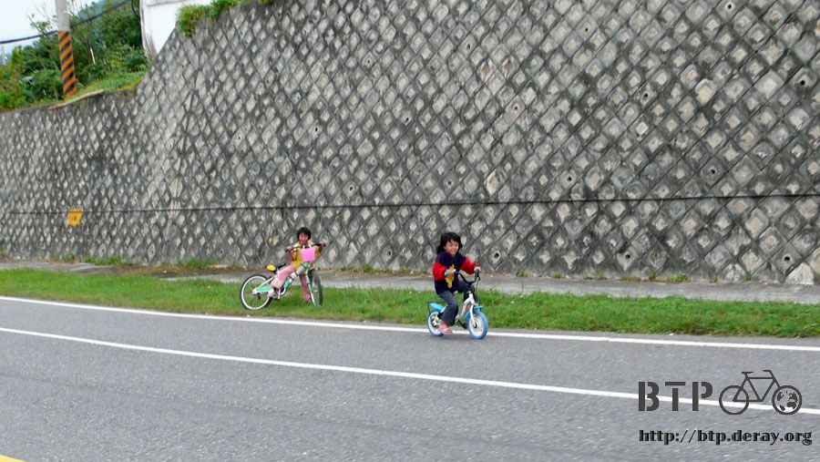
非常令人驚訝的，台灣道路居然有單車專用道，還以為這種東西要國外才看的到，雖然是設立在台十一線而不是市區道路，但總是個好的開始。
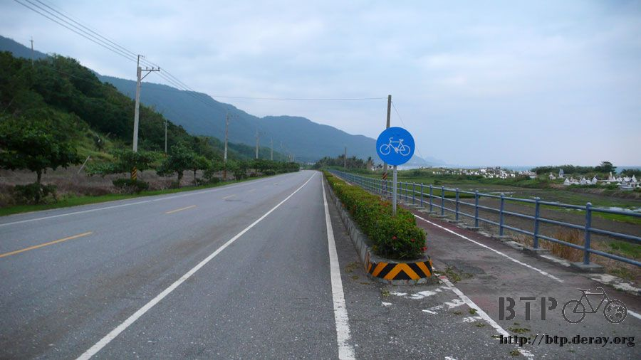
開開心心的騎在單車專用道，發現專用道的路況比一般馬路還要崎嶇，也很多碎石跟雜物，為了怕破胎，還是又騎回汽車道。
晚上五點多，趁著天色還亮，想早一點物色過夜處，老是騎到天黑才找過夜處實在很心酸。
反正不論多騎一小時或是現在就休息，大致來說是沒什麼差別的，離花蓮就是還那麼遠，不如就趁早休息吧。
映入眼簾的是一間教會，在遠處就被那發光的紅色十字架給吸引，在國外想住教會都沒辦法，因為門老是鎖著的。
在台灣要住廟過也很容易，住教會一直是我的小期盼，但一直沒能如願，今天再去敲敲門，也許可以找到留宿一晚的機會。
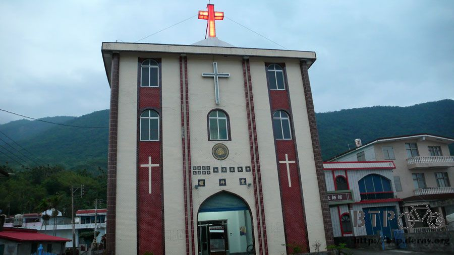
大門是開著的，很快的就發現牧師，表明來意之後很快的就得到住宿的許可，還問我需不需要棉被，晚餐吃過了沒？
只要有地方可以住就很高興了，微笑的搖頭說不需要其他東西，這段回台北的路，都不敢在露天的地方過夜，很怕半夜變成落湯雞。
在教會大大的廁所中擦澡，一天的結束真是令人感到全身放鬆的時刻，稍作休息之後，緊接著的是睡覺，而不是繼續騎車。
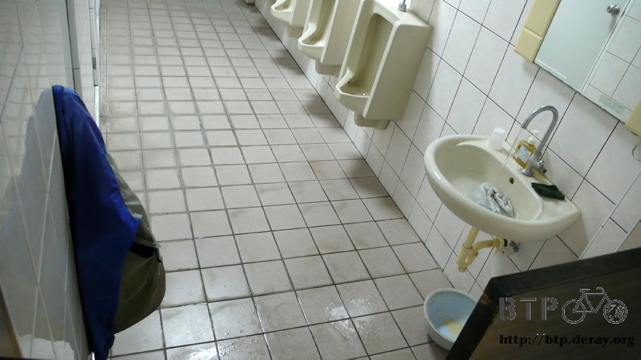
一進入教會，外頭天色馬上就變黑，把車子牽進裡頭，晚上就睡在樓梯間底下，可以擋風又能擋雨。

終於如願以償的讓我住到教會了，現在剩下墓地還沒有睡過了，怎麼好像聽到很多人在喊著『千萬不要呀』？
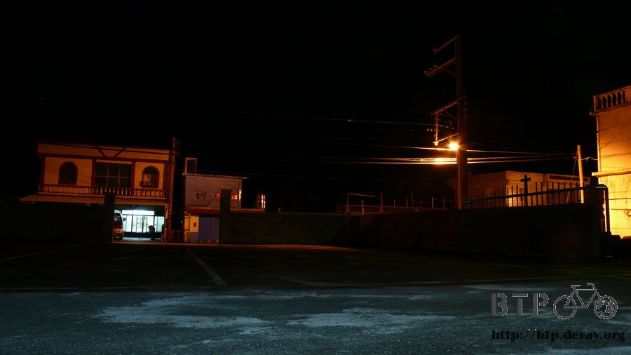
晚上教會在做禮拜，我就安靜的窩在牆角打電腦，睡地上也是一種幸福，在十字架的庇祐之下，有種安心的感覺。
路上的指示牌雖然很多，但是都沒有縣界的牌子，所以搞不清楚過夜的地方究竟是台東還是花蓮？
明天繼續要跟東北季風對抗，想在秋冬季節環島的人，有機會看到這篇遊記的話，記得這個時節要順時鐘環島，逆時鐘騎會很想哭。
繼續閱讀：10.20 就是愛讀書